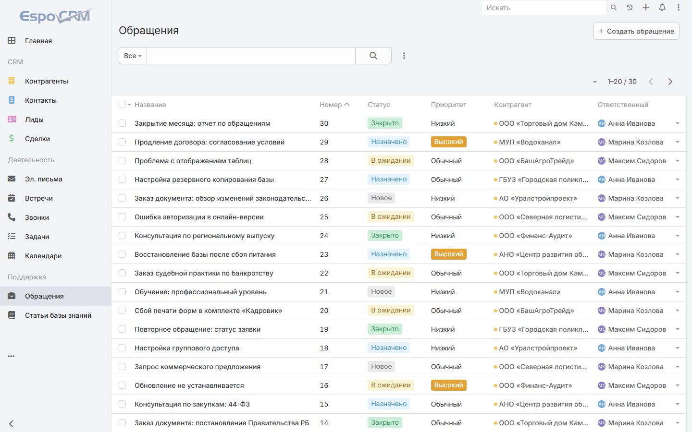
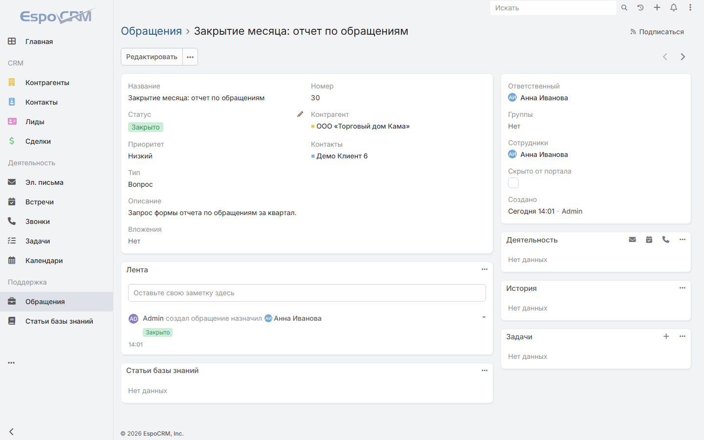

Результат в цифрах
Как это выглядит

Список обращений: статусы, приоритеты, клиенты и ответственные

Карточка: клиент, контакт, описание и история изменений
Демо-прототип
Комплект: сайт, админка и CRM Демо-прототип
Прототип работает в браузере без сервера: 30 вымышленных обращений, фильтры, карточка, смена статусов и история. Изменения сохраняются только на вашем устройстве и не передаются другим посетителям. Данные вымышленные.
Что в работе
Анализ и требования
Характеристика организации, каналы обращений, хронометраж, 8 функциональных и 6 нефункциональных требований к системе.
Выбор решения
Сравнение подписки, свободной CRM и «1С:CRM» по функциям, стоимости владения и месту хранения данных. Выбрана EspoCRM.
Проект и внедрение
Воронка обращений, роли, интеграция с сайтом и почтой, информационная модель, расчёт эффекта и план на восемь недель.
Стенд
EspoCRM в контейнерах с демонстрационными данными. Архив и инструкция — в разделе ниже, разворачивается на VPS за 15 минут.
Развернуть стенд
Нужен сервер с российским центром обработки данных: 2 vCPU, 2 ГБ памяти, Docker и Docker Compose.
unzip accent-crm-stand.zip -d crm
cd crm
cp .env.example .env # пароли и адрес системы
docker compose up -d # 2–3 минуты
bash deploy/restore.sh # демонстрационные данныеПодробности — в deploy/README.md внутри архива.
Материалы
- Отчёт по производственной (преддипломной) практике, PDF · DOCX
- Отчёт по технологической (проектно-технологической) практике, PDF · DOCX
- Комплект стенда — конфигурация, дамп демонстрационной базы, скрипты резервного копирования
- Демо-прототип CRM — работает в браузере